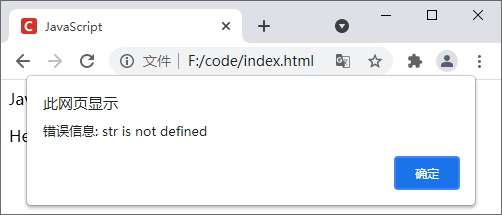

首页 > JavaScript
JS try catch用法：异常处理
在编程中，有时代码并不会像我们预期的那样运行，会遇到各式各样的错误，例如代码中使用了错误的符号、调用未定义的方法、网络错误、读取不存在的文件、没有操作权限等。
根据类型的不同，JavaScript 编程中的错误大致可以分为以下三种类型：
异常（Exception）是在代码运行中出现的，例如调用某个未定义的方法、读取不存在的文件等。在出现异常之前，代码的运行并不受影响，当出现异常时，会在浏览器控制台输出错误信息，并终止程序的运行。
JS 示例代码如下：
当 try 语句块中的代码出现异常时，会创建并抛出一个 Error 对象（例如上面代码内
JavaScript 中内置了一个 Error() 函数来创建要抛出的错误对象，示例代码如下：
发生不同的错误，会返回不同的错误类型，JavaScript 中支持以下几种错误类型：
根据类型的不同，JavaScript 编程中的错误大致可以分为以下三种类型：
- 语法错误：也称为解析错误，一般是因为代码存在某些语法错误引起的。当发生语法错误时，代码会停止运行；
- 运行时错误：也称为异常，发生在程序运行期间，例如调用未定义的方法、读取不存在的文件等，发生运行时错误也会终止代码运行；
- 逻辑错误：是最难发现的一种错误，逻辑错误通常是因为代码存在瑕疵，导致程序输出意外的结果或终止运行。
错误和异常的区别
错误（Error）是在代码运行之前出现的，在运行 JavaScript 程序之前，JavaScript 解释器会先对代码进行检查，如果代码有误，例如某些语法错误，浏览器就会报出相应的错误，只有将错误修正后，代码才能运行。异常（Exception）是在代码运行中出现的，例如调用某个未定义的方法、读取不存在的文件等。在出现异常之前，代码的运行并不受影响，当出现异常时，会在浏览器控制台输出错误信息，并终止程序的运行。
JS 异常处理
异常处理的目的是捕捉产生异常的代码，使整个程序不会因为异常而终止运行。在 JavaScript 中，您可以使用 try catch 语句来捕获异常，并做出相应处理，语法格式如下：
try {
// 可能会发生异常的代码
} catch(error) {
// 发生异常时要执行的操作
}
JS 示例代码如下：
<!DOCTYPE html>
<html lang="en">
<head>
<meta charset="UTF-8">
<title>JavaScript</title>
</head>
<body>
<script>
try {
var title = "JavaScript";
document.write(title);
// 调用一个未定义的变量
document.write(str);
// 若发生错误，则不会执行以下行
alert("所有语句都已成功执行。");
} catch(error) {
// 处理错误
alert("错误信息: " + error.message);
}
// 继续执行下面的代码
document.write("<p>Hello World!</p>");
</script>
</body>
</html>
运行结果如下图所示：

图1：JS try catch 用法示例
图1：JS try catch 用法示例
当 try 语句块中的代码出现异常时，会创建并抛出一个 Error 对象（例如上面代码内
catch(error) 中的 error），对象中包含两个属性，如下所示：- name：错误的类型；
- message：对错误的描述信息。
JS try catch finally 语句
在 try catch 语句的后面，还可以添加一个 finally 语句块，无论 try 语句块中的代码是否发生错误，finally 语句中的代码都会执行。示例代码如下：
<!DOCTYPE html>
<html lang="en">
<head>
<meta charset="UTF-8">
<title>JavaScript</title>
</head>
<body>
<script>
// 接收用户输入的参数
var num = prompt("输入一个 0 到 100 的数字");
// 获取当前时间
var start = Date.now();
try {
if(num > 0 && num <= 100) {
console.log(Math.pow(num, num)); // 指数幂的基
} else {
console.log("输入的值无效!");
}
} catch(e) {
console.log(e.message);
} finally {
// 显示执行代码所用的时间
console.log("代码执行花费了：" + (Date.now() - start) + "ms");
}
</script>
</body>
</html>
假如我们输入一个小于 100 的数字，例如 88，运行结果如下：
1.3015928349429721e+171
代码执行花费了：0ms
输入的值无效!
代码执行花费了：0ms
JS 抛出错误
JavaScript 中，不仅可以依赖 JavaScript 解析器来自动抛出错误，还可以手动抛出错误。抛出错误需要使用 throw 语句，语法格式如下：throw expression;
其中 expression 为要抛出的异常，可以是任何类型的值，例如对象、字符串、数组等，推荐使用对象类型。JavaScript 中内置了一个 Error() 函数来创建要抛出的错误对象，示例代码如下：
<!DOCTYPE html>
<html lang="en">
<head>
<meta charset="UTF-8">
<title>JavaScript</title>
</head>
<body>
<script>
function squareRoot(number) {
// 如果数字为负数，则抛出错误
if(number < 0) {
throw new Error("抱歉，无法计算负数的平方根！");
} else {
console.log(Math.sqrt(number));
}
}
try {
squareRoot(16);
squareRoot(625);
squareRoot(-9);
squareRoot(100);
// 若抛出错误，则不会执行下面的行
console.log("所有函数都执行成功。");
} catch(e) {
// 处理错误
console.log(e.message);
}
</script>
</body>
</html>
运行结果如下：
4
25
抱歉，无法计算负数的平方根！
JS 错误类型
前面我们提到，当 try 语句块中的代码出现错误时，会创建并抛出一个 Error 对象，对象中包含错误类型和错误描述两个属性。发生不同的错误，会返回不同的错误类型，JavaScript 中支持以下几种错误类型：
| 错误类型 | 说明 |
|---|---|
| EvalError | 使用 eval() 函数时发出错误，会抛出该错误 |
| InternalError | 由 JavaScript 引擎内部错误导致的异常，会抛出该错误 |
| RangeError | 范围错误，当使用了超出允许范围的数值时，会抛出该错误 |
| SyntaxError | 语法错误，当代码中存在任何语法错误时，会抛出该错误 |
| TypeError | 类型错误，当使用的值不是预期类型时，会抛出该错误，例如对数字调用字符串方法，对字符串调用数组方法等 |
| URIError | URI 错误，当使用 URI 相关函数但传入 URI 参数时，会抛出该错误 |
| ReferenceError | 参数错误，当尝试使用未定义的变量、函数、对象时，会抛出该错误 |
关注公众号「站长严长生」，在手机上阅读所有教程，随时随地都能学习。内含一款搜索神器，免费下载全网书籍和视频。

微信扫码关注公众号